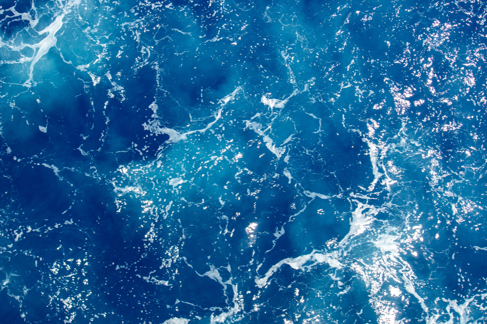
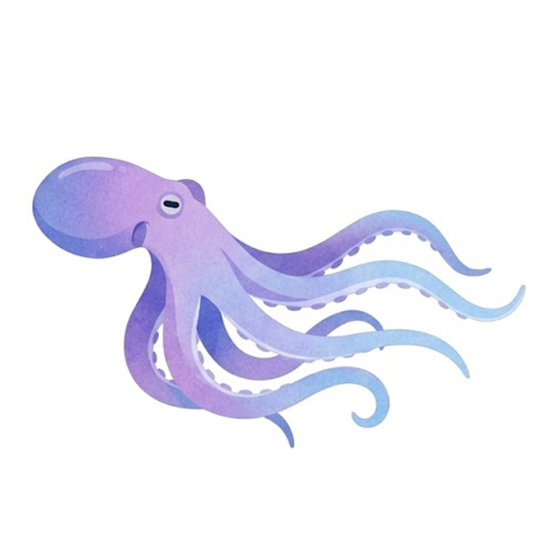
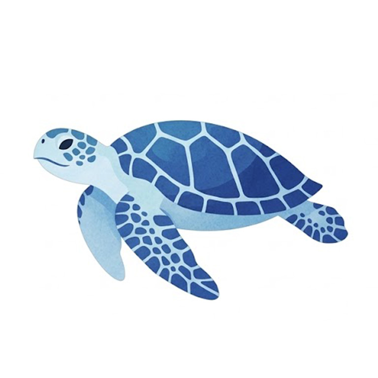

Manta
翼展可達數公尺，性情溫和，喜歡定期到定點讓小魚清理身體。

An act of swimming deep under water without using breathing equipment.

翼展可達數公尺，性情溫和，喜歡定期到定點讓小魚清理身體。

沒有大腦與心臟，部分種類甚至能逆生長達到理論上的永生。

游速極快且攻擊力強，那根長喙連木船都能刺穿。

體型巨大卻很脆弱，大部分時間都在海面曬太陽放空。

擁有柔軟無骨的身軀與高度發達的智慧，透過偽裝來躲避天敵。

流線型的外殼與強壯的鰭狀肢，海洋優雅的巡航者。